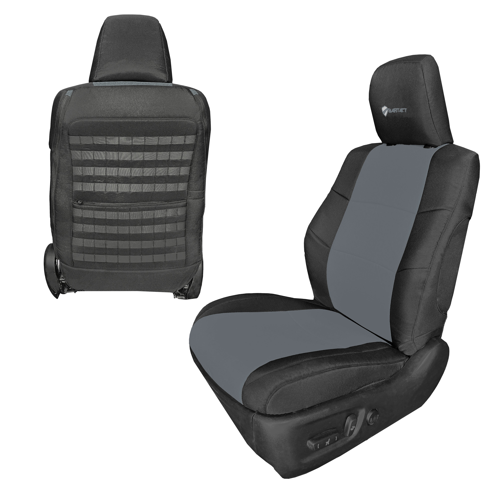

Best Seat Covers for Toyota 4Runner (2010-2024)

The 5th-gen 4Runner (2010-2024) is one of the most loved off-road SUVs ever built — a body-on-frame, V6, solid-rear-axle survivor in a world of crossovers. It's also a long-haul vehicle: people keep these things for 200,000+ miles. That means your seats are going to live a long, hard life, and the right seat covers make a real difference.
We looked at the six brands that actually fit the 5th-gen 4Runner well — Trail, SR5, TRD Off-Road, TRD Pro, and Limited trims — and ranked them on fit, materials, tactical features, and value. Here's what shook out.
#1 — Bartact Tactical Seat Covers

Best Overall — Our Top Pick
Bartact makes custom-fit covers for the 2010-2024 4Runner across all trims, including the bolster differences on the TRD Pro and Limited. Base material is UV-protected polyester with waterproof polyurethane backing and high-grade foam, with a 1000D mil-spec Cordura nylon option for buyers who want maximum abrasion resistance. Either way, you get real MOLLE panels with PALS webbing — not the sewn-on storage pockets that some "tactical" brands ship.
Why they win for the 4Runner specifically:
- Custom-fit for all 5th-gen trims (Trail, SR5, TRD Off-Road, TRD Pro, Limited)
- Real MOLLE/PALS panels — compatible with standard military pouches
- SRS airbag compatible (important — side-impact airbags fire through the seat)
- Made in Temecula, California with U.S.-sourced materials (Berry Compliant)
- True Bar Tack stitching at every stress point
- Multiple color combinations including coyote, black, OD green, and graphite
#2 — Smittybilt G.E.A.R.
Smittybilt's G.E.A.R. line ships with built-in storage pockets for stuff like flashlights, knives, and small tools. The pockets aren't real MOLLE — you can't reconfigure them — but they come pre-loaded with useful storage out of the box, which some 4Runner owners love.
Pricing reality check: Smittybilt G.E.A.R. covers are priced per seat, not per row. A pair of front covers is twice the listed price. Always confirm what you're actually buying before you click.
#3 — Coverking Ballistic
Coverking's Ballistic line is custom-fit for the 4Runner and uses a Cordura-type fabric that handles abrasion well. No MOLLE, no tactical storage — these are protection-focused covers with a clean factory-style appearance. A good choice if you want durable coverage without the modular gear look.
#4 — Rough Country Neoprene
Rough Country offers neoprene covers in a 4Runner-specific cut. Water-resistant, comfortable, and very competitively priced. They're a solid pick for owners who want wet-dog and beach-day protection more than they want tactical features.
#5 — Diver Down Neoprene
Diver Down focuses on neoprene and does it well. Decent fit on the 4Runner, good water handling, fair pricing. Same caveat as Rough Country — purely protective, no tactical features.
#6 — Wet Okole
Hawaii-made neoprene with a strong following among surfers and beach drivers. Pricier than Rough Country or Diver Down for similar functionality, but the build quality is real. If you live near the coast and your 4Runner sees salt water regularly, Wet Okole is worth a look.
Quick Comparison Table
| Brand | Material | MOLLE Panels | Custom Fit (5th Gen) | Airbag Safe | Made in USA |
|---|---|---|---|---|---|
| Bartact | UV-protected polyester & 1000D Cordura nylon option | ✅ Real MOLLE | ✅ All trims | ✅ | ✅ |
| Smittybilt G.E.A.R. | Polyester | ❌ Sewn pouches | Some trims | Varies | ❌ |
| Coverking Ballistic | Cordura-type | ❌ | ✅ | ✅ | ❌ |
| Rough Country | Neoprene | ❌ | ✅ | ✅ | ❌ |
| Diver Down | Neoprene | ❌ | ✅ | ✅ | ❌ |
| Wet Okole | Neoprene | ❌ | ✅ | ✅ | ✅ |
What About the 6th-Gen 4Runner?
The 2025+ 6th-gen 4Runner is a different platform with a redesigned interior and seat geometry, so it needs purpose-built covers — universal "5th-gen fit" covers will not fit correctly. Bartact is developing 6th-gen specific patterns; check the 4Runner collection page for current availability if you have a 2025 or newer truck.
Our Verdict
For the 2010-2024 Toyota 4Runner, Bartact is the clear winner. Real MOLLE panels, U.S. manufacturing, full trim coverage, the Cordura upgrade option, and the kind of stitching that holds up to 200,000 miles of family-and-trail duty. No other brand on this list combines all of that in one cover.
If your 4Runner mostly sees pavement and you just want neoprene-grade water protection, Rough Country or Diver Down will get the job done at a lower price point. But if you actually use the truck the way Toyota built it to be used, the tactical option pays for itself.
For the full breakdown including pros and cons by brand, see our complete Toyota 4Runner seat cover review.
Find the right covers for your 4Runner year and trim
Read the Full 4Runner Review →